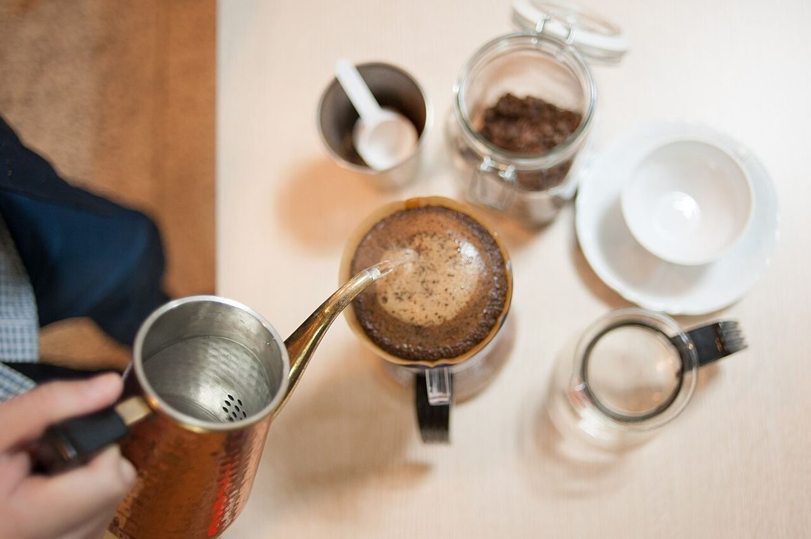
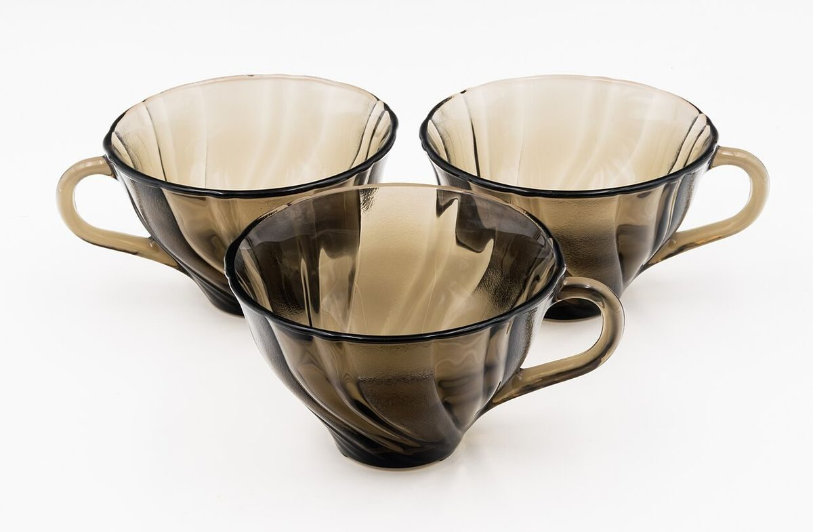

お店について

イメージお店の情報
- 店名
- Caf'e 1/2
- 読み
- カフェ ニブンノイチ
- 所在地
- 広島県三原市高坂町真良2149-3
- https://instagram.com/cafe2bn1
- 営業時間
- 準備中(お問い合わせください)
- 定休日
- 準備中(お問い合わせください)
- 席数
- 準備中(お問い合わせください)
- 支払い方法
- 準備中(お問い合わせください)
- 駐車場
- 準備中(お問い合わせください)

店主のこと・お店の想いは準備中です(お問い合わせください)
制作側の案:窓辺のひと息
立ち寄る前の小さな時間を、窓の外を眺めるような気持ちで過ごしていただけたら。
そんな願いを込めて、このサイトは窓枠のデザインで写真を並べています。
お店の情報が整い次第、実際のお店の言葉と写真に差し替えられます。
制作側の案です。お店のコンセプトではありません。

イメージ